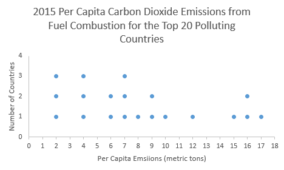

Unit 1 Describing Data
Review
- Identify the population and the sample:
- A survey of 1353 American households found that 18% of the households own a computer.
population: all American households
sample: collection of 1353 American households surveyed
- A recent survey of 2625 elementary school children found that 28% of the children could be classified as obese.
population: all elementary school children
sample: collection of 2625 elementary school children surveyed
- The average weight of every sixth person entering the mall within a 3 hour period was 146 lb.
population: all people entering the mall within the assigned 3 hour period
sample: every 6th person entering the mall within the 3 hour period
- A survey of 1353 American households found that 18% of the households own a computer.
- Determine whether the numerical value is a parameter or a statistic (and explain):
- A recent survey by the alumni of a major university indicated that the average salary of 10,000 of its 300,000 graduates was $125,000.
statistic – part of 300,000 graduates are surveyed
- The average (mean) atomic weight of all elements in the periodic table is 134.355 unified atomic mass units.
parameter – includes all of the elements
- The average late fee for 360 credit card holders was found to be $56.75.
statistic – 360 credit cards were examined (not all)
- A recent survey by the alumni of a major university indicated that the average salary of 10,000 of its 300,000 graduates was $125,000.
- For the studies described, identify the population, sample, population parameters, and sample statistics:
- In a USA Today Internet poll, readers responded voluntarily to the question “Do you consume at least one caffeinated beverage every day?”
population: all readers of USA Today
sample: volunteers that responded to the survey
population parameter: percent who have at least one caffeinated drink among all readers of USA Today
sample statistic: percent who have at least one caffeinated drink among those who responded to the survey
- Astronomers typically determine the distance to a galaxy (a galaxy is a huge collection of billions of stars) by measuring the distances to just a few stars within it, and taking the mean (average) of these distance measurements.
population: all stars in the galaxy
sample: the few stars selected for measurements
population parameter: mean (average) of distances between all stars and Earth
sample statistics: mean of distances between the stars in the sample and Earth
- In a USA Today Internet poll, readers responded voluntarily to the question “Do you consume at least one caffeinated beverage every day?”
- Determine whether the data are qualitative or quantitative:
- the colors of automobiles on a used car lot
qualitative
- the numbers on the shirts of a soccer team
qualitative
- the number of seats in a movie theater
quantitative
- a list of house numbers on your street
qualitative
- the ages of a sample of 350 employees of a large hospital
quantitative
- the colors of automobiles on a used car lot
- Identify the data set’s level of measurement (nominal, ordinal, interval, ratio):
- hair color of players on a high school tennis team
nominal
- numbers on the shirts of a soccer team
nominal
- ages of students in a statistics class
ratio
- temperatures of 22 selected refrigerators
interval
- number of milligrams of tar in 28 cigarettes
ratio
number of pages in your statistics book
ratio
- marriage status of the faculty at the local community college
nominal
- the rank of a winning Super Bowl team in their division
ordinal
- the ratings of a movie ranging from “poor” to “good” to “excellent”
ordinal
- the final grades (A,B,C,D, and F) for students in a chemistry class
ordinal
- the annual salaries for all teachers in Utah
ratio
- list of zip codes for Chicago
nominal
- the nationalities listed in a recent survey
nominal
- the amount of fat (in grams) in 44 cookies
ratio
- hair color of players on a high school tennis team
- Decide which method of data collection you would use to collect data for the study (observational study or experimental study):
- A study of the salaries of college professors in a particular state
observational
- A study of the effects of a fertilizer on a soybean crop
experimental
- A study of the proportion of students who spend more than $300 per semester on books
observational
- A study of the change in cognitive functioning after consuming two beers.
experimental
- A study of the effects of long term smoking on life expectancy.
observational
- A study of the salaries of college professors in a particular state
- Identify the sampling technique used (random, cluster, stratified, convenience, systematic, voluntary response):
- Every fifth person boarding a plane is searched thoroughly.
systematic
- Five math classes are randomly selected out of 20 and all of the students from each class are interviewed.
cluster
- A researcher randomly interviews ten Math professors and ten History professors.
- A researcher for an airline interviews all of the passengers on five randomly selected flights.
cluster
- A radio station broadcast in the city of Knoxville asked people to call in and express their opinion of the city mayor.
voluntary response
- A PSCC student interviews everyone in a biology class to determine the percentage of students that own a car.
convenience
- A market researcher randomly selects 200 drivers under 35 years of age and 100 drivers over 35 years of age.
stratified
- All of the teachers from 85 randomly selected nation’s middle schools were interviewed.
cluster
- To avoid working late, the quality control manager inspects the last 10 items produced that day.
convenience
- The names of 70 contestants are written on 70 cards. The cards are placed in a bag, and three names are picked from the bag.
random
- Every fifth person boarding a plane is searched thoroughly.
- Explain what bias there is in a study done entirely online.
It is limited to people with computers.
- A local newspaper ran a survey by asking, “Do you support the development of a weapon that could kill millions of innocent people?” Determine whether the survey questions is biased and why.
The survey is biased because the question leads people to believe the weapon will be used to kill innocent people.
- Here we list the 20 countries that emitted the most carbon dioxide in 2015. Construct the following using the data: Frequency Distribution, Relative Frequency Distribution, Cumulative Frequency Distribution, Histogram, Dot Plot, Stem and Leaf. For the frequency distribution use a class width of 3 and 0 - 2.9 as the first class.
2015 Total Emissions
Country RankCountry 2015 Per Capita Carbon Dioxide Emissions
from Fuel Combustion (metric tons)1 China 6.6 2 United States 15.5 3 India 1.6 4 Russia 10.2 5 Japan 9.0 6 Germany 8.9 7 South Korea 11.6 8 Iran 7.0 9 Canada 15.3 10 Saudi Arabia 16.9 11 Brazil 2.2 12 Mexico 3.7 13 Indonesia 1.7 14 South Africa 7.8 15 United Kingdom 6.0 16 Australia 15.8 17 Italy 5.5 18 Turkey 4.1 19 France 4.4 20 Poland 7.3 Frequency EMISSIONS FREQUENCY 0 – 2.9
3
3 - 5.9
4
6 - 8.9
6
9 - 11.9
3
12 - 14.9
0
15 - 17.9
4
Relative Frequency EMISSIONS RELATIVE
FREQUENCY0 - 2.9
15%
3 – 5.9
20%
6 - 8.9
30%
9 - 11.9
15%
12 - 14.9
0%
15 - 17.9
20%
Cumulative Frequency EMISSIONS CUMULATIVE
FREQUENCY0 - 2.9
3
3 - 5.9
7
6 - 8.9
13
9 - 11.9
16
12 - 14.9
16
15 - 17.9
20
Stem and Leaf Stem Leaves 1
6 7
2
2
3
7
4
1 4
5
6
0 6
7
0 3 8
8
9
9
0
10
2
11
6
12
13
14
15
3 5 8
16
9
16
9 = 16.9


-
Below is a random sample of life expectancies from 20 countries:
70.5 65 70 51.5 57.5 61 78.5 61 72 64.5 56.5 73 69 52.5 78.5 54 74.5 76 70 68.5
- Make a frequency table of the life expectancies.
Use a starting lower class limit of 50.0 and a class width of 5.0.
Class Frequency 50.0 – 54.9
3
55.0 – 59.9
2
60.0 – 64.9
3
65.0 – 69.9
3
70.0 – 74.9
6
75.0 – 79.9
3
- Answer the following questions based on your histogram:
- What are the class boundaries?
49.95, 54.95, 59.95, 64.95, 69.95, 74.95, 79.95
- What are the class midpoints?
52.45, 57.45, 62.45, 67.45, 72.45, 77.45
- What are your lower class limits?
50.0, 55.0, 60.0, 65.0, 70.0, 75.0
- What are your upper class limits?
54.9, 59.9, 64.9, 69.9, 74.9, 79.9
- Draw a histogram using the class midpoints:

- Use the same data to create a relative frequency distribution:
Classes Relative Frequency 50.0 - 54.9
3/20 = 15%
55.0 - 59.9
2/20 = 10%
60.0 - 64.9
3/20 = 15%
65.0 - 69.9
3/20 = 15%
70.0 - 74.9
6/20 = 30%
75.0 - 79.9
3/20 = 15%
- What are the class boundaries?
- Make a frequency table of the life expectancies.
- Use the following data to complete a-e:
AIDS data indicating the number of months a patient with AIDS lives after taking a new antibody drug are as follows (smallest to largest):
3 4 8 8 10 11 12 13 14 15 15 16 16 17 17 18 21 22 22 24 24 25 26 26 27 27 29 29 31 32 33 33 34 34 35 37 40 44 44 47
- Calculate the measures of center from the given list of numbers.
Mean:
23.6
Median:
24
Mode:
multi-modal
Midrange:
25
- Create a frequency table using 2 as the lower limit of the first class and a class width of 8.
CLASS FREQUENCY 2 - 9
4
10 - 17
11
18 - 25
7
26 - 33
10
34 - 41
5
42 - 49
3
- ESTIMATE the mean of the data using the frequency table.
Mean = 23.5
- ESTIMATE the median of the data using the frequency table. First, identify the position of the median. Which CLASS in the frequency table contains the median?
The position of the median is 41/2 = 20.5, so the 21st term, which is in the third CLASS 18 - 25.
- Calculate the measures of center from the given list of numbers.
- These are the volumes (in ounces) of randomly selected cans of Coke:
12.3 12.0 12.1 12.3 12.2 12.3 12.2
- Find the Mean, median, mode, midrange.
Mean = 12.2 Median = 12.2 Mode = 2.3 Midrange = 2.15
- Find the mean of the following frequency distribution:
GPA FREQUENCY CLASS MIDPOINT
F x Midpoint
0 - 0.9 4 0.45
1.8
1 - 1.9 7 1.45
10.15
2 - 2.9 12 2.45
29.4
3 - 3.9 15 3.45
51.75
4 - 4.9 6 4.45
26.7
SUM = 44
SUM = 119.8
119.8/44 = 2.72
MEAN = 2.72
- What is the shape of the data represented in the frequency distribution?
Skewed to the left
- Find the Mean, median, mode, midrange.
- The ages of the employees at a local newspaper are given. Use the data to complete a-d:
20 26 52 30 21 36 34 60 57 51 56 63 42
- Calculate the measures of variation from the given list of numbers.
Range = 43 Variance = 232.6 Standard Deviation = 15.3
- Create a frequency table using 20 as the lower limit of the first class and a class width of 10.
CLASS FREQUENCY MIDPOINT
20 -29
3
24.5
30 - 39
3
34.5
40 - 49
1
44.5
50 - 59
4
54.5
60 - 69
2
64.5
- ESTIMATE the mean of the ages using the frequency table.
Mean = 43.7
- ESTIMATE the standard deviation of the ages using the frequency table.
Standard Deviation = 15.0
- Calculate the measures of variation from the given list of numbers.
- Use the frequency table to estimate the mean and standard deviation of ticketed speeds:
Speed in mph of Driver
Ticketed in 30 mph ZoneFrequency of Speed
Reported on the TicketMidpoint
42 - 45 10 43.5
46 - 49 14 47.5
50 - 53 7 51.5
54 - 57 3 55.5
58 - 61 1 59.5
- Estimate the mean of the data:
Mean = 48.2
- Estimate the standard deviation of the data:
Standard Deviation = 4.2
- Estimate the mean of the data: